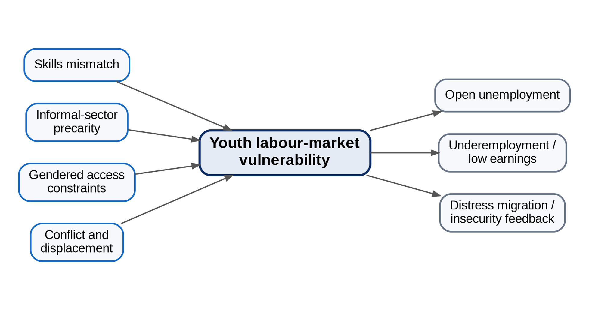

CHIATECH JOURNAL
SETEHEM · VOLUME 1 · ISSUE 1 · JULY 2026 · e019
PIONEER PUBLICATION · ACCEPTED ARTICLE · ORIGINAL RESEARCH ARTICLE · ENTREPRENEURSHIP & MANAGEMENT · ECONOMICS · HUMANITIES & SOCIAL SCIENCES
Youth Labour-Market Vulnerability in Nigeria’s North-Central Zone: Mixed-Methods Evidence on Skills Mismatch, Informality, Gender and Conflict Exposure
Dr. Iboro Tom IDIM
Department of Economics, University of Abuja, Abuja, Nigeria
Correspondence: ibotom5050@gmail.com
Article | Volume/Issue | Publication | ISSN | DOI |
|---|---|---|---|---|
e019 | 1(1) | Pioneer Issue · July 2026 | Pending assignment | Pending registration |
Abstract
Background: Youth unemployment in Nigeria’s North-Central zone is intertwined with underemployment, informal work, skills mismatch, gendered barriers and insecurity. Objective: This study examined the structural and social factors associated with youth labour-market vulnerability across Benue, Kogi, Kwara, Nasarawa, Niger, Plateau and the Federal Capital Territory. Methods: The parent study used a sequential mixed-method design. A structured survey was administered to 882 youth respondents (126 per constituent unit), with reported internal consistency of α=.81. The qualitative strand comprised 35 focus-group discussions, 70 key-informant interviews and intensive case studies in Guma, Benue State, and Riyom, Plateau State. Quantitative analysis used descriptive statistics, cross-tabulation, chi-square tests and binary logistic regression; qualitative material was analysed thematically. Because Nigeria introduced a revised Labour Force Survey methodology in 2023, this article does not treat pre-2023 and revised national unemployment estimates as one directly comparable time series. Results: The source analysis reports that 73% of employed youth in the survey worked in informal activities and more than 80% of those informal workers earned below the statutory minimum wage applicable during fieldwork. Holding a tertiary Arts or Social Sciences degree rather than a STEM/vocational qualification was associated with 1.8 times the odds of unemployment (p<.01), while female respondents had 1.5 times the odds after adjustment for education and location (p<.001). Conflict exposure was closely linked to livelihood disruption, displacement and reduced youth agricultural engagement. Conclusion: The evidence supports an integrated jobs strategy combining demand-led skills, agro-industrial and digital opportunities, gender-responsive access to assets, conflict-sensitive livelihood restoration and stronger labour-market information.
Keywords: youth unemployment; underemployment; informal employment; skills mismatch; gender inequality; conflict exposure; mixed methods; North-Central Nigeria
1. Introduction
Employment vulnerability in North-Central Nigeria is not adequately captured by a single unemployment rate. The region includes agrarian communities, fast-growing state capitals, displaced populations, mineral and transport corridors and a large informal economy. Youth may therefore be unemployed, intermittently employed, underemployed, working below their skill level or earning too little to secure a stable livelihood.
The original study combined labour-force evidence with a large regional field survey and qualitative inquiry. For publication, the present article focuses on the field evidence that can be interpreted consistently across the seven constituent units. This is important because the National Bureau of Statistics introduced a revised Labour Force Survey methodology in 2023, based on updated international standards. Historical estimates produced under older definitions should therefore not be joined mechanically to the revised series as if there were no measurement break.
The article examines four linked dimensions: education-to-work mismatch, informal-sector precarity, gendered access constraints, and conflict-related livelihood disruption. These dimensions are treated as interacting determinants of labour-market vulnerability rather than as isolated deficits of individual youth.
1.1 Objectives
Characterise the structure and quality of youth employment in the North-Central field sample.
Assess the relationship of field of education and sex with unemployment status in the reported logistic models.
Examine how conflict exposure and displacement intersect with youth livelihoods.
Translate the mixed-method findings into regionally relevant employment and peacebuilding priorities.
2. Materials and Methods
2.1 Design and study population
A sequential mixed-method design combined quantitative survey analysis with qualitative explanation. The study covered Benue, Kogi, Kwara, Nasarawa, Niger and Plateau States and the Federal Capital Territory. Youth were operationalised in the source study as persons aged 15–34. Urban and rural localities were purposively included within each constituent unit to capture spatial variation.
2.2 Quantitative and qualitative evidence
The primary survey included 882 youth respondents, allocated equally at 126 per state/FCT unit. The structured questionnaire covered employment status, sector, hours, income, educational background, skills, migration, conflict exposure and related characteristics; the source reports Cronbach’s α=.81. The qualitative strand comprised 35 focus-group discussions (five per constituent unit), 70 semi-structured key-informant interviews, and two intensive locality case studies. Interviews and focus groups were transcribed and analysed thematically.
Component | Documented sample / source | Primary purpose |
|---|---|---|
Youth survey | 882 respondents; 126 per state/FCT unit | Employment structure, earnings, education, sex, location and conflict exposure |
Focus groups | 35 groups; typically 10–12 participants | Shared barriers, gender norms, livelihood conditions and conflict effects |
Key-informant interviews | 70 interviews | Policy, education, agriculture, youth associations, peacebuilding and labour-market perspectives |
Case studies | Guma (Benue) and Riyom (Plateau) | Intensive examination of conflict, displacement and livelihood adaptation |
Secondary labour statistics | NBS and complementary sources | Context; not treated as a single directly comparable 2010–2023 series after the 2023 methodology revision |
Table 1. Mixed-method evidence base.
2.3 Analysis and ethics
The source study reports analysis in SPSS 27 and Stata 17. Descriptive statistics and cross-tabulations summarised employment patterns; chi-square tests examined categorical relationships; and binary logistic regression modelled unemployment status. Qualitative transcripts were coded and developed into themes using a Braun-and-Clarke-style thematic procedure with NVivo 12 support. The study reports approval by the University of Abuja Institutional Review Board, informed consent, anonymity and conflict-sensitive safeguards.

Figure 1. Analytical framework for youth labour-market vulnerability in the North-Central zone.
3. Results
3.1 Informality and low-quality employment
The source analysis estimates that 73% of employed youth respondents worked in informal trade, artisanry, low-end services or commercial transportation. More than 80% of informal youth workers were reported to earn below the national minimum wage applicable during the survey period. The result distinguishes employment quantity from employment quality: labour-force attachment did not necessarily imply adequate earnings, social protection, career progression or productive use of education.
3.2 Education and skills mismatch
In the reported logistic analysis, respondents with tertiary qualifications in Arts or Social Sciences had 1.8 times the odds of unemployment relative to respondents with STEM or vocational qualifications (p<.01), holding the model’s other specified factors constant. This result should not be read as a hierarchy of academic disciplines; it indicates a mismatch between the field mix of graduate supply and the observed regional demand for technical, agricultural, digital and enterprise skills.
3.3 Gendered labour-market disadvantage
After adjustment for education and location, female respondents had 1.5 times the odds of unemployment (p<.001) in the source model. Qualitative material linked this disadvantage to mobility constraints, domestic and care responsibilities, unequal access to land and collateral, and concentration in low-capital activities. The mixed-method convergence supports a policy focus on access to productive assets and safe mobility rather than skills training alone.
3.4 Conflict exposure and livelihood disruption
Conflict emerged as both a labour-market shock and a feedback mechanism. The source analysis reports a strong positive correlation (r=.76) between reported conflict incidents in a locality and decline in youth agricultural engagement over the study period. Qualitative accounts described farm abandonment, livestock loss, market closure, displacement and distress migration. These processes can move young people from agrarian livelihoods into saturated urban informal markets, where earnings and stability remain weak.
Indicator | Reported result | Editorial interpretation |
|---|---|---|
Informal work among employed youth | 73% | Employment is concentrated in low-productivity activities |
Informal workers below fieldwork-period minimum wage | >80% | Job quality and earnings are central, not only unemployment status |
Arts/Social Sciences vs STEM/vocational qualification | OR 1.8; p<.01 | Field-of-study mismatch is associated with unemployment in the reported model |
Female vs male respondents | OR 1.5; p<.001 | Gendered disadvantage persists after education/location adjustment |
Conflict incidents vs decline in youth agricultural engagement | r=.76 | Conflict exposure is closely associated with livelihood erosion; the coefficient is associative, not causal proof |
Table 2. Selected field results retained from the source study.
4. Discussion
The findings indicate a regional employment crisis characterised as much by low-productivity work and mismatch as by open unemployment. This is consistent with contemporary Nigerian labour-market analysis emphasising the scarcity of productive wage jobs, weak labour-market matching and limited opportunities that fully utilise young people’s education and skills.
The skills result should be interpreted as a signal about demand structure, not as an argument to devalue humanities or social-science education. Labour-market relevance can be improved through applied digital competencies, entrepreneurship, data skills, communication, sector-specific technical modules and stronger work-based learning across disciplines.
The gender result underscores the limitation of supply-side training when women face unequal access to collateral, land, market spaces, transport, safety and time. Gender-responsive employment policy therefore requires asset access, childcare and mobility solutions, finance instruments and institutional safeguards alongside training.
Conflict-related job loss also changes the appropriate policy unit. In affected communities, employment programmes should be designed together with peacebuilding, land and market restoration, safe return, agricultural recovery and psychosocial support. A standalone entrepreneurship course cannot compensate for destroyed productive assets or inaccessible markets.
5. Policy Framework
Policy pillar | Priority action | Why it follows from the evidence |
|---|---|---|
Demand-led skills | Embed technical, digital, business and work-based modules in tertiary/TVET programmes | Addresses field-of-study and employer-demand mismatch |
Productive informal-sector upgrading | Credit, equipment leasing, bookkeeping, market access, cluster infrastructure and social protection | Improves quality of the sector absorbing most employed youth |
Gender-responsive enterprise access | Collateral alternatives, safe transport, childcare, land/asset access and targeted finance | Responds to the adjusted female unemployment disadvantage |
Jobs-for-peace recovery | Livelihood restoration in conflict-affected localities linked to mediation, security and market reopening | Treats conflict as a direct employment shock |
Agro-industrial value chains | Processing, storage, logistics and off-farm services around regional agriculture | Creates higher-productivity jobs close to rural youth |
Labour-market information | Comparable local indicators, employer demand tracking and programme outcome evaluation | Improves targeting and prevents policy based on incomparable or obsolete statistics |
Table 3. Integrated employment-policy response.
6. Limitations
The study is observational and combines purposive locality selection with a large field survey; causal interpretation should therefore remain cautious. Some reported effect estimates are presented in the source manuscript without full model tables in the journal extract, limiting independent reconstruction from the article alone. Historical NBS unemployment estimates also span a major methodology revision, so this article does not interpret them as one continuous comparable series. Future work should deposit the de-identified survey dataset and complete analysis syntax and should report confidence intervals for all adjusted effects.
7. Conclusion
Youth labour-market vulnerability in North-Central Nigeria is a problem of job quantity, job quality and unequal access. The retained field findings show a workforce heavily concentrated in informal activity, important education-to-work mismatch, a distinct female disadvantage and a strong conflict–livelihood link. Effective intervention requires coordinated demand creation, applied skills, productive informal-sector upgrading, gender-responsive asset access and conflict-sensitive livelihood restoration. The central policy shift is from counting programme beneficiaries to measuring whether young people obtain safer, more productive and more durable work.
Declarations
Declaration | Statement |
|---|---|
Ethics and consent | The source study reports approval by the University of Abuja Institutional Review Board, informed consent, anonymity and additional safeguards in conflict-sensitive settings. |
Funding | No external grant funding is declared in the supplied manuscript. |
Competing interests | The author declares no competing interests. |
Data availability | The study reports a 2023 field survey and associated qualitative materials. De-identified data and analytic syntax should be made available by the author where consent, ethics approval and confidentiality permit. |
AI-assisted tools | AI-assisted editorial tools may be used for language, formatting and consistency checks under human author/editor control. The author remains responsible for analysis, sources and conclusions. |
Related version | This article is a focused journal version of the author's broader North-Central youth-unemployment study and prioritises the directly interpretable field evidence. |
References
Braun, V., & Clarke, V. (2006). Using thematic analysis in psychology. Qualitative Research in Psychology, 3(2), 77–101.
International Labour Organization. (2023). Assessment of public employment services in Nigeria. ILO.
International Labour Organization. (2023). ILO youth country briefs: Nigeria. ILO. https://doi.org/10.54394/XZNS2151
Krueger, R. A., & Casey, M. A. (2014). Focus groups: A practical guide for applied research (5th ed.). SAGE.
National Bureau of Statistics. (2023). Nigeria Labour Force Survey: Q4 2022 & Q1 2023—press release and revised methodology. Abuja, Nigeria.
National Bureau of Statistics. (2023). Nigeria Labour Force Survey reports. Abuja, Nigeria.
World Bank. (2024). Nigeria Development Update: Staying the course—progress amid pressing challenges. World Bank.
World Bank. (2025). Nigeria Development Update: Building momentum for inclusive growth. World Bank.
Field Survey. (2023). Primary survey on youth employment in Nigeria’s North-Central zone [Unpublished dataset]. Department of Economics, University of Abuja.
Suggested citation: Idim, I. T. (2026). Youth labour-market vulnerability in Nigeria’s North-Central Zone: Mixed-methods evidence on skills mismatch, informality, gender and conflict exposure. CHIATECH JOURNAL, 1(1), e019. DOI pending registration.
© 2026 Iboro Tom IDIM. Author retains copyright. Published by CHIA TECH SOLUTIONS AND RESOURCES LIMITED under CC BY 4.0.